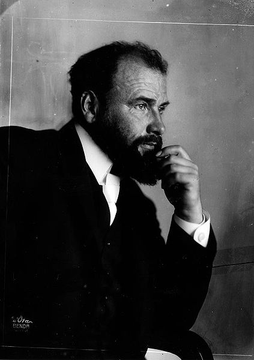

Gustav Klimt
(Baumgarten, 14 de julio de 1862-Alsergrund, 6 de febrero de 1918)
Gustav Klimt fue un pintor simbolista austríaco, y uno de los más conspicuos representantes del movimiento modernista de la secesión vienesa. Klimt pintó lienzos y murales con un estilo personal muy ornamentado, que también manifestó a través de objetos de artesanía, como los que se encuentran reunidos en la Galería de la Secesión vienesa. Intelectualmente afín a cierto ideario romántico, Klimt encontró en el desnudo femenino una de sus más recurrentes fuentes de inspiración. Sus obras están dotadas de una intensa energía sensual, reflejada con especial claridad en sus numerosos apuntes y esbozos a lápiz, en cierto modo herederos de la tradición de dibujos eróticos de Rodin e Ingres.
